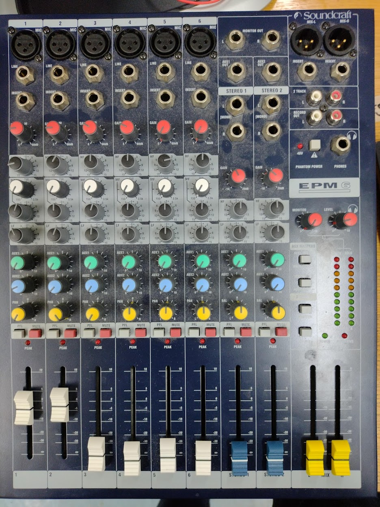
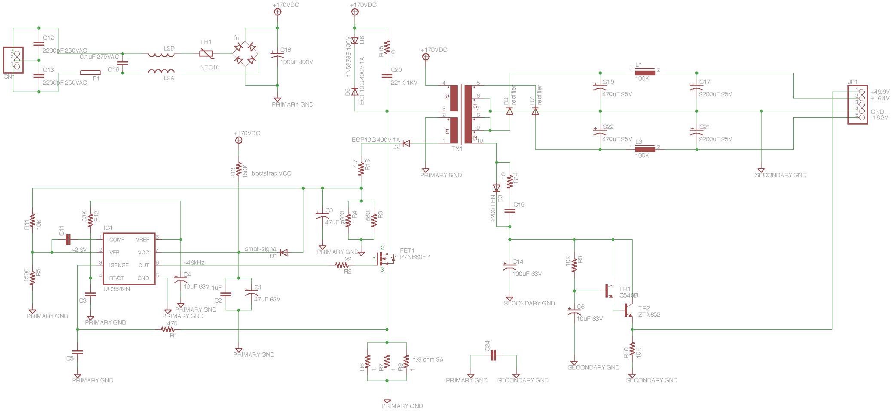
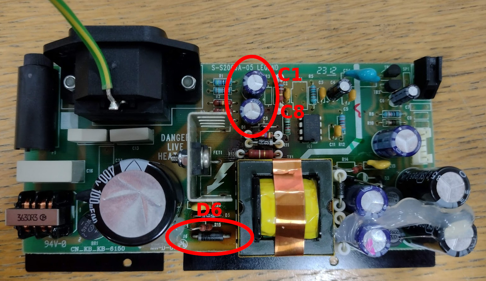
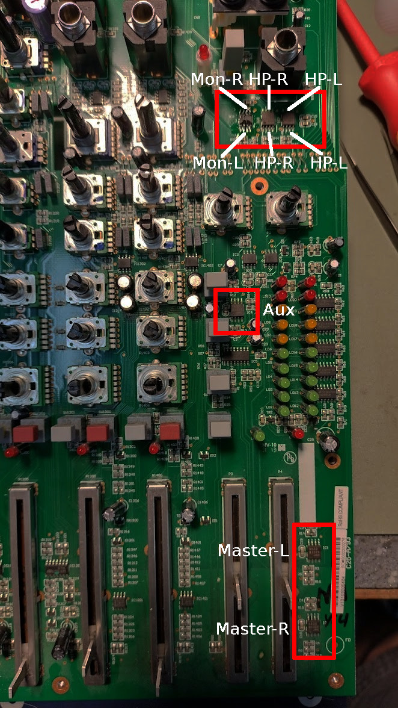
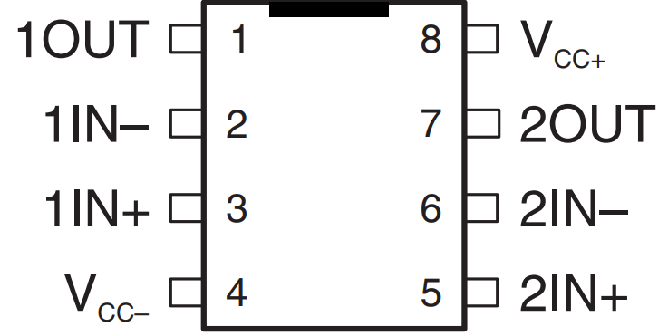

Soundcraft EPM6 power supply repair.
Capacitors. The 'it's always DNS' of electronics repair.

Introduction
I've repaired four Soundcraft EPM6s and while they all die of the same cause, they can display different symptoms.
Symptoms
The mixer will either die entirely or sometimes the power and even VU meter LEDs will flicker on their own.
In a lot of cases, the raised section at the back of the mixer containing the power supply will become warmer than usual.
Even after repairing the power supply, you will often find random outputs dying or producing a loud sizzling/white noise sound.
Disassembling this mixer is pretty simple. Remove all the screws on the casing and all fader/knob caps and nuts on the front panel jacks.
Then the front plate lifts off allowing you to unscrew and remove the entire mixer PCB, leaving the PSU in the case.
The power supply
PSU PCB marked "S-S2006A-05 LEGEND"

I found this great PSU schematic at
Keith's Electronics Blog.

C1 and C8 wear out over time due to excessive heat. Sometimes their capacitance will drop or more likely, ESR increases.
Sometimes they will fail entirely.
To test capacitors and diodes, first desolder them and then use an
LCR meter (The ~£30 range is sufficient).
The capacitor test function of your multimeter is not a substitute for a proper LCR meter as the LCR meter also measures ESR.
When these capacitors begin to fail, D6 is stressed and overheats until it eventually blows.
If you catch the fault early and replace the capacitors before D6 fails,
you may notice the mixer enclosure stays cooler than before as the PSU can operate more efficiently now it's reservoir capacitors aren't leaking like sieves.
In my case, I replaced the two 105 °C 35 V 47 uF capacitors with Wurth 125 °C 50 V 47 uF caps to give the desk a longer life.
The diode was replaced like for like with a 1N5378B 100V 5W zener.
Keith's Electronics Blog reported that the original capacitors were 85 °C rated but despite mine being rated higher, they have still failed.
At this stage, the desk should power up correctly but you now must test every single input and output with a signal and with silence.
NE5532 op-amps
It is common (in 3/4 of the desks I have repaired) for one or more of the NE5532 opamps to die due to stress from the failing power supply.
This can cause a sizzling/white noise sound or even just total silence. On the worst desk, 4 out of the 6 op-amps died so I replaced them all.
Make sure you buy the more expensive ± 20V op-amps instead of the ± 15V.
This is where the
schematic comes in handy.
Trace the faulty output back to the nearest NE5532 and use a version of
this DIY tool to narrow down the fault to one of these op-amps.
I haven't seen any of the other op-amps fail (TL072 etc.).
Tracing a silent output is fairly easy.
If the signal is audible on one of the two input pins (inverting or non-inverting) but not audible on the output pin, then the op-amp has failed.
If all three are silent, the fault is earlier on in the signal chain and if there is a strong signal at the output pin,
then the fault is later on in the signal chain.
Tracing a noisy output is trickier but using basic electronics theory and the schematic, you can work out when an op-amp is producing noise on it's own.

Each NE5532 has two channels (top and bottom). In the row of three:
The left IC does the monitor outputs (left channel = bottom side, right channel = top side).
The middle IC does right headphone output (top and bottom both used).
The right IC does left headphone output (top and bottom both used).
Plus one for each main fader and one in the middle for the two aux outputs.
If you haven't the patience to narrow down what's causing your faulty outputs, I recommend replacing all 6 NE5532s as a precaution.

© James Baber 2023.